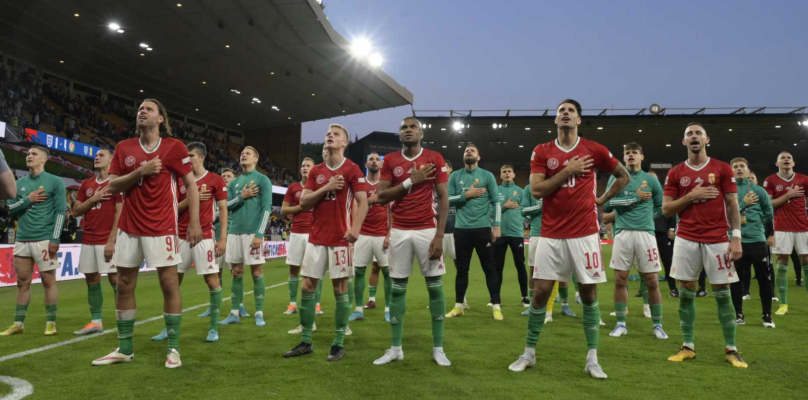
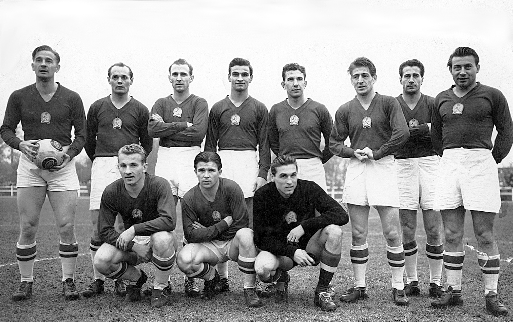
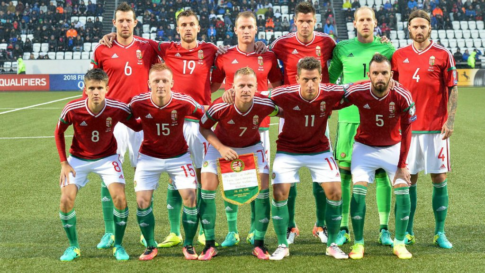
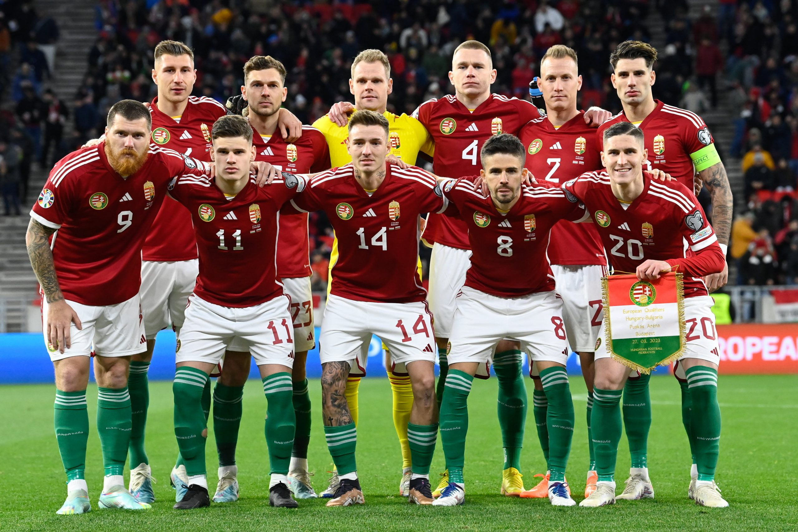

A Magyar Válogatott Története
A magyar labdarúgó válogatott története gazdag és sokszínű. Kezdetben a 20.
század elején alakult meg, és azóta
számos sikert ért el a nemzetközi porondon. Itt van egy részletesebb áttekintés a magyar válogatott
történelméről:

Az alapítás és az első évek:
A magyar labdarúgó válogatott története 1902-ben kezdődött, amikor az első hivatalos
nemzetközi mérkőzését
játszotta az osztrák válogatott ellen, és 5-0 arányban győzött.
A válogatott az első évtizedekben főleg közép-európai ellenfelekkel mérkőzött meg, és
elindult az első
nemzetközi versenyeken, beleértve az 1924-es és 1928-as nyári olimpiai
játékokat.
Az Aranycsapat korszaka:
A magyar labdarúgás aranykora az 1950-es években volt, amikor a "Magyar
Aranycsapat" lett a világ egyik legjobb futballcsapata.

A csapat tagjai között olyan legendás játékosok voltak, mint Puskás Ferenc,
Kocsis Sándor, Hidegkuti Nándor és
Bozsik József.
Az Aranycsapat sokszorosan megdöntötte az ellenfelek rekordjait, és a magyar válogatott
futballtörténetének
egyik legfényesebb időszakát hozta el.
Az 1960-as és 1970-es évek:
Az Aranycsapat korszakát követően a magyar válogatott továbbra is aktív volt a nemzetközi porondon, de
már nem volt olyan domináns.
A válogatott rendszeresen részt vett az európai és világbajnokságokon, bár nem értek el olyan kiemelkedő
eredményeket, mint az Aranycsapat idején.
Az 1980-as évek:
Az 1980-as években a magyar válogatott továbbra is aktív volt az európai és világbajnokságokon, de nem
sikerült olyan sikereket elérnie, mint a múltban.
Azonban az Európa-bajnokságokon való rendszeres részvétel továbbra is fontos volt a magyar futball
számára.
A 1990-es évek és a 2000-es évek eleje:
A 1990-es években és az 2000-es évek elején a magyar válogatott rendszeresen próbált kvalifikálni magát
a világ- és Európa-bajnokságokra, de a legtöbbször nem sikerült túljutnia a csoportkörön.
A hazai és külföldi bajnokságokban is sikeres magyar játékosok szerepeltek a válogatottban, de a
csapatnak nehézségei voltak a nemzetközi porondon.
2016-os Európa-bajnokság:
Magyarország labdarúgó-válogatottja 30 év után ismét nagy tornán vesz részt, az Európa-bajnokságon.
A Magyar labdarúgó-válogatott hatalmas meglepetésre a 8. döntőig jutott.

2024-as Európa-bajnokság:
A 2024-es labdarúgó-Európa-bajnokság lesz a 17. Európa-bajnokság, amely az UEFA által szervezett, négyévente megrendezésre kerülő férfi labdarúgó-válogatottjai számára kiírt Európa-bajnokság. A tornát 2024. június 14. és július 14. között rendezik Németországban.
Magyarország labdarúgó-válogatottja zsinorba 3. alkalommal vant kint az EB-n.

A válogatottban tehetséges játékosok tűntek fel, és a csapat folyamatosan fejlődik, remélve, hogy újabb
sikereket érhetnek el a jövőben.
A magyar labdarúgó válogatott története során számos emlékezetes pillanatot és kiemelkedő játékost
hozott létre, és továbbra is fontos szereplő a nemzetközi futballban. A szurkolók rendszerint büszkék a válogatott
hagyományaira és azokra az időszakokra, amikor a csapat sikeresen képviselte Magyarországot a
világversenyeken.